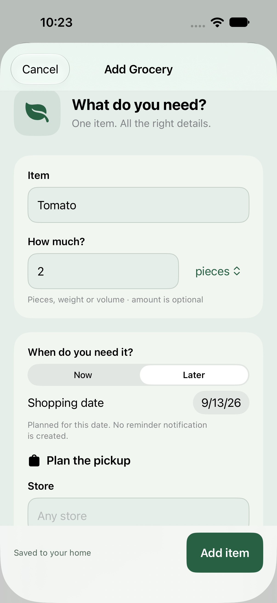
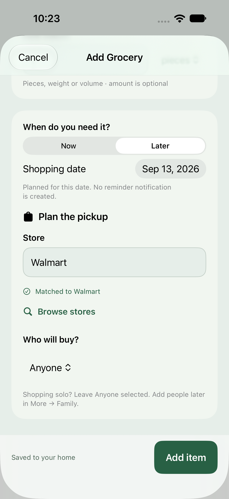
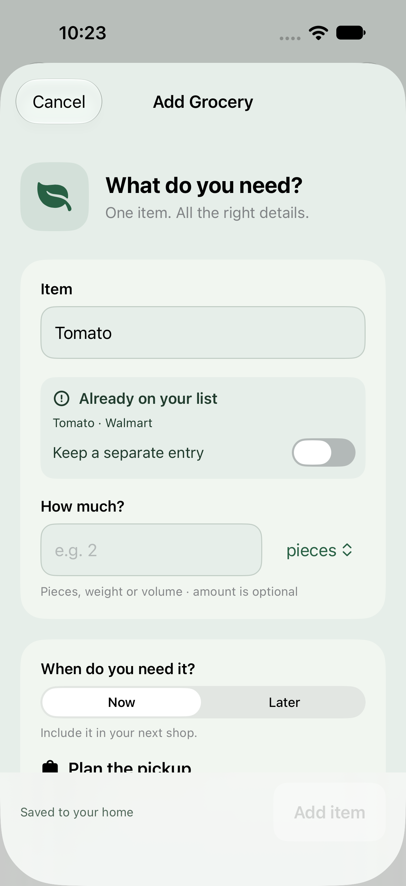
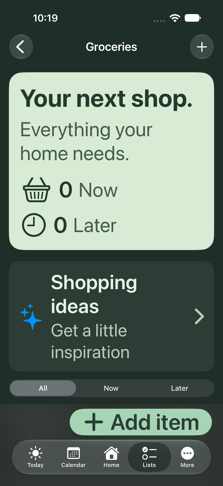

LUNAHEARTH · DEVELOPMENT PREVIEW
A smoother shopping form.
Amount + unit, planned dates, inline store suggestions and clear duplicate feedback.
Actual simulator screenshots. These changes are not yet in TestFlight build 3.

Amount, unit and date
Stores as you type
Duplicate feedback
Dark mode · Large text